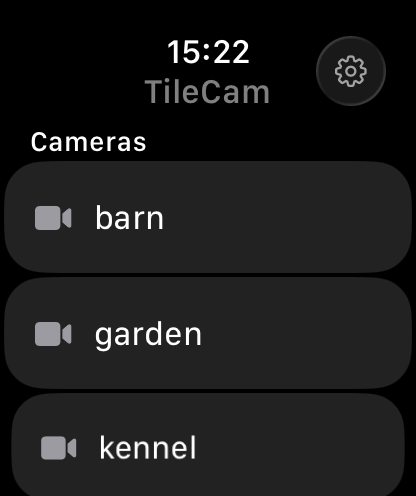

Pull all your feeds into one grid. Pinch to zoom into any of them. Glance at them on your iPhone, iPad, Mac — or your wrist. No more a browser tab per camera.
I use an iPad as a nanny-cam and just wanted to see every camera at once — without juggling clunky manufacturer apps and a browser tab per feed. So TileCam is one grid: every camera live, tap to zoom, and it looks like an Apple app, not a security panel.
Every camera in one adaptive grid that reflows to fit — one full-screen, four in a 2×2, however many you point it at.
Pinch into any feed to read a label, check a face, or watch the cot — and it remembers where you left each one.
Spot subtle movement at a glance — a breathing magnifier, directional motion flow, and an intensity heatmap, right on the feed.
Float a camera in the corner and keep half an eye on it while you do everything else.
Two-way audio on cameras that support it, with per-stream mute and clean level metering.
iPhone, iPad, and Mac — the same calm grid, in sync, wherever you happen to be standing.
Raise your wrist for a live look at any camera — the cot, the front door, the driveway — without reaching for a phone. The Apple Watch app is the only paid part of TileCam: a single one-time unlock, no subscription.

Point your own go2rtc server at whatever cameras you've got — TileCam tiles them on every Apple device.
Any camera works — from a €200 UniFi to an €18 Tapo with its internet access blocked. Your go2rtc server gathers them on your own network, and TileCam turns them into one calm grid on every Apple device. Your video never leaves your network — nothing is routed through us.
The iPhone, iPad, and Mac apps are completely free. The Apple Watch companion is a single one-time purchase — buy it once, keep it forever, shareable with Family Sharing. No subscriptions, ever.